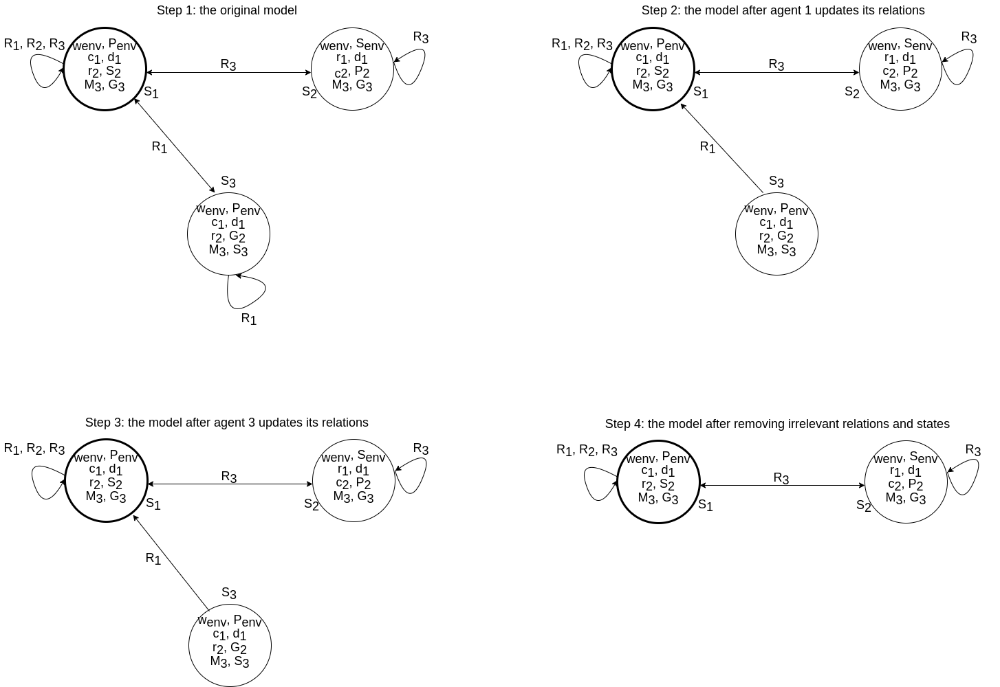

We will now show examples of a (illustrated) Kripke model.
We will see how players base their decisions on this model and how the model is updated as the game of Clue progresses.
For this purpose, and to keep the explanation from being unnecessarily elaborate, we temporarily assume that there are four weapons and four suspects.
We remove axe, lead and handgun from the list of weapons.
We use the following abbreviations:
candle is c, dagger is d, rope is r, wrench is w, Scarlet is S, Mustard is M,
Green is G and Plum is P.
Now see Figure 1, which shows a Kripke model of just 3 states (the total number of states would be much greater) and their relations.
The true state is shown in the top left.
Figure 1 - Kripke model with 3 states and its relations.
As far as relations go, the envelope does not have any relations,
since we do not care about potential ways that the envelope can have the same card
and about what the envelope 'knows'. For the players, each player has relations
from a state to another state if that players has the same cards in both states.
This is also explained in Model & Implementation.
For example, in the true state of this example, player 1 has the candle and the dagger.
So, from that state, \(R_1\) can reach any state where they also have the candle and dagger.
Figure 1's relations show that player 1 can reach states 1 and 3. Player 2 can only reach state 1. Lastly, player 3
can reach states 1 and 2. In our model, we decided to include refexive relations.
After all, it would be sensible for players to consider the state itself that they are in to be true.
Like all other relations, reflexive relations pointing to a certain state only exist if the player considers that state possible.
The Kripke model is updated during every time step.
This is done using public announcement when not showing a card, private announcement when showing a card and applying the additional rules.
These are all described in Model & Implementation.
What happens during a turn
We will now see how the Kripke model example is updated during a turn.
For this, we will first give an example of when, after a suggestion, the player that is suggested to has at least one of the suggested cards.
Next, we will show what might happen if the player that is suggested to has none of the suggested cards.
Card suggestion: player has at least one of the suggested cards
[TODO: explain this and work out using an example.]
During a turn a player can ask another player for 2 cards: a weapon and a suspect.
If this player has one of those cards, this card will be shown only to the player who asked for the card.
This is a private announcement and action models can be used to show the update of the Kripke model after showing the card.
We will now consider two examples of what happens when player 2 shows a card to player 1.
The difference between these two scenarios is the amount of knowledge player 3 has as a result.
The figures indicate what happens in our model, the action model update is slightly different
as explained in the accompanying text.
Figure 2 - Kripke model showing updates of the model after player 2 shows a card to player 1 and player 3 can
determine the card.
Consider Figure 2 and the following scenario: player 1 asks player 2 {dagger, Scarlet}.
Player 2 has Scarlet, and thus shows this card. Note that player 3 already knows that player 1 has the dagger.
Step 1 shows the original model. Step 2 shows the model after player 1 has updates its
relations. Player 2 has shown player 1 the Scarlet card, so player 1 removes all relations to states where
player 2 does not have Scarlet, since those states are no longer possible. As can be seen in figure 2,
this corresponds to player 1 removing the relation from state 1 to state 3 and the reflexive relation of
state 3. In step 3, player 3 updates its relations.
Since player 1 asked for {dagger, Scarlet} and was shown a card, it must be the case that player 2 has Scarlet.
After all, player 3 already knows that player 1 has the dagger.
So, player 3 removes all relations to states where player 2 does not
have Scarlet.
As far as an action model goes, this is a private announcement:
\(E = \{show(dagger), show(Scarlet)\}\)
\(\sim_1 = \{(e,e)| e \in E\}, \sim_2 = \{(e,e)| e \in E\}, \sim_3 = E \times E\)
Player 3 knows \(pre(show(dagger)) = dagger_2\) is false, so there are no states for which this precondition
is relevant. The precondition \(pre(show(Scarlet)) = Scarlet_2\) is relevant, and thus only states
where agent 2 has the Scarlet card will remain.
In the last step, for visualisation purposes, we remove one-sided relations, since those start from a state that is
impossible for the respective player and therefore are not relevant for finding the content of the envelope.
Moreover, states without relations are removed to clarify which potential states are still possible.
In this small example, only the actual state remains after all players have updated their relations.

Figure 3 - Kripke model showing updates of the model after player 2 shows a cards and player 3
cannot determine the card.
For Figure 3, player 1 asks player 2: {candle, Scarlet}. Player 2 has Scarlet, and thus shows this card.
player 3 does not know that player 1 has the candle. This is because player 3 considers state 2 as
a possibility and here player 2 has the candle.
Step 1 and 2 are the same as for the scenario in Figure 2, because player 1 still sees the same card and updates
the same relations. During step 3, player 3 updates its relations while knowing
less information than in the previous scenario. player 3 does not know that player 1 has the candle, but
can still gather some information from player 2 showing a card to player 1. More precisely, player 3 knows
that player 2 has either the candle or Scarlet card or both. So, player 3 can remove relations to all states
where player 2 does not have the candle and does not have Scarlet. In this example, this corresponds
to keeping all existing relations, since all relations of player 3 point to states where player 2 has either
the candle or Scarlet.
As far as an action model goes, this is a private announcement:
\(E = \{show(candle), show(Scarlet)\}\)
\(\sim_1 = \{(e,e)| e \in E\}, \sim_2 = \{(e,e)| e \in E\}, \sim_3 = E \times E\)
Player 3 does not know that \(pre(show(candle)) = candle_2\) is false. So now all states where one of the
preconditions is true will remain.
For step 4, irrelevant relations and states are removed again to show the relevant states. Here, more
potential states are still considered possible by player 3 than only the actual state.
Card suggestion: player has none of the suggested cards
During a turn a player can ask another player for 2 cards: a weapon and a suspect.
If this player does not have those cards, then no card will be shown.
This is a public announcement and action models can be used to show
the update of the Kripke model after not showing any card.
Figure 4 - Kripke model showing updates of the model after player 2 does not show a card.
Consider Figure 4 and the scenario: player 1 asks player 2 {candle, Green}. Player 2 does not have
these cards and hence cannot show any cards. Step 1 shows the original model. Step 2 and 3 show respectively
player 1 and 3 updating their relations. Both of them know that player 2 does not have the candle and
does not have Green, so they can remove any states where player 2 has the candle and any state where
player 2 has Green. For player 1 this corresponds to removing relations to state 3, because here player 2 has
Green. For player 3, relations to state 2 are removed, since here player 2 has the candle.
As far as an action model goes, this is a public announcement:
\(E = \{do\_not\_show\_cards()\}\)
\(\sim_1 = E \times E, \sim_2 = E \times E, \sim_3 = E \times E\)
For all agents, only states with this precondition will remain, so there will only be states
where agent 2 does not have the candle and does not have Green.
In step 4 all irrelevant relations and states are removed, leaving only the actual state.
Knowing the content of the envelope
If a player knows the content of the envelope,
then this player will state this and win the game.
A player knows the content of the envelope when for this player, all states where their relations
point to have the same content for the envelope.
In the example, this is the case for player 2 in all figures.
Player 1 knows the content of the envelope in steps 2 to 4 of Figure 2, steps 2 to 4 of Figure 3 and steps 2 to 4 of Figure 4.
Player 3 knows the content of the envelope in steps 3 and 4 of Figure 2 and steps 3 and 4 of Figure 4.
Note that in our digital implementation, the game ends as soon as anyone knows the content of the envelope.
In this example, we have shown some more steps for explanation purposes even though player 2 would have already won.
Updating the model using the Clue rules
After getting a response on the suggestion, the Kripke model is updated and the turn of the player ends.
The response might give more information than at first glance.
As explained in Model & Implementation, a player might use rules to gain extra knowledge.
However, in our Kripke model this is already implemented without adding extra rules explicitly.
This is because the generation of states and relations in the Kripke model is already constrained.
An example was already given of this in the explanation of Figure 3.
Because player 3 knows that player 1 has the dagger and knows that player 2 might either have the
dagger or Scarlet (or both), they can deduce that player 2 must have Scarlet.
This does not occur via rules, but instead implicitly due to the way the states are set up.
Because for each state, all sets of cards for the players are pairwise exclusive, there is no state
where both players 1 and 2 have the dagger.
As player 3 knows that player 1 has the dagger, there only exist states for this player
(i.e. relations are pointed to only these states) where player 1 has the dagger and no-one else has the dagger.
When player 3 gets to know that player 2 might either have the dagger or Scarlet, all relations of
player 3 are removed that point towards states in which player 2 has neither the dagger nor Scarlet.
Only states remain (for the relations of player 3 to point to) that either have the dagger or Scarlet for player 2.
However, because there are only states (for the relations of player 3 to point to) where no-one
else but player 1 has the dagger, only these states remain that have Scarlet for player 2.
Similar implicit deduction occurs for all such rules.